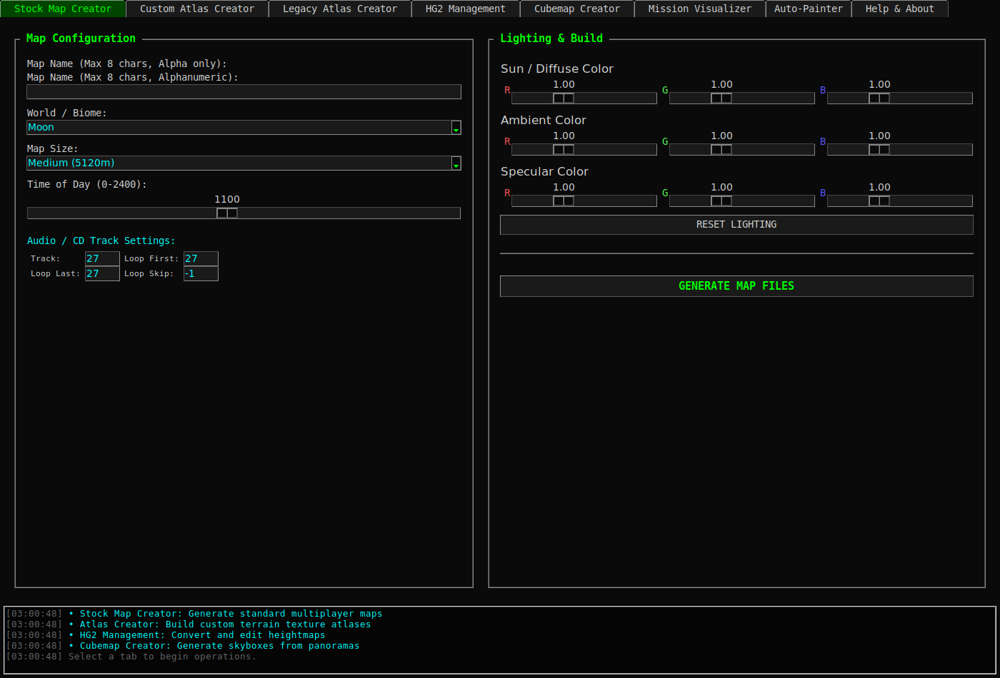
World authoring suiteRedux World Builder
Creates and converts Battlezone worlds with atlas generation, TRN/MAT output, terrain conversion, mission visualization, cubemap tooling, and auto-painting.

BATTLEZONE // 02C
Authoring · Blender · diagnostics · extraction · publishing · multiplayer
Practical Battlezone utilities, Blender add-ons, and workflow tools. Runtime UI captures are shown directly on the catalog tiles where available so the tool list reads visually instead of like a wall of text.

World authoring suiteCreates and converts Battlezone worlds with atlas generation, TRN/MAT output, terrain conversion, mission visualization, cubemap tooling, and auto-painting.
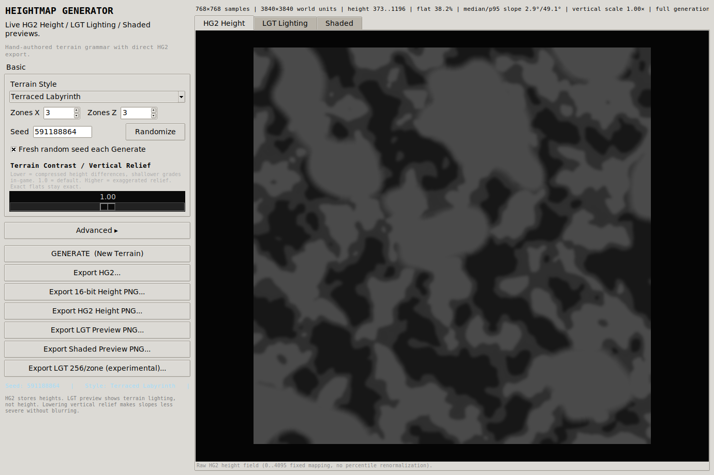
Procedural terrainGenerates authored-style HG2 terrain using shelves, ravines, basins, corridors, craters, planetary archetypes, and live previews.
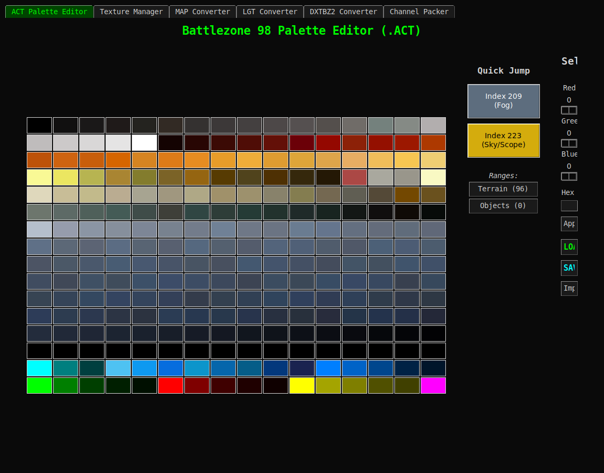
Texture pipelineHandles ACT palettes, DDS/TGA/PNG conversion, MAP textures, LGT lightmaps, mipmaps, compression, and derived texture generation.
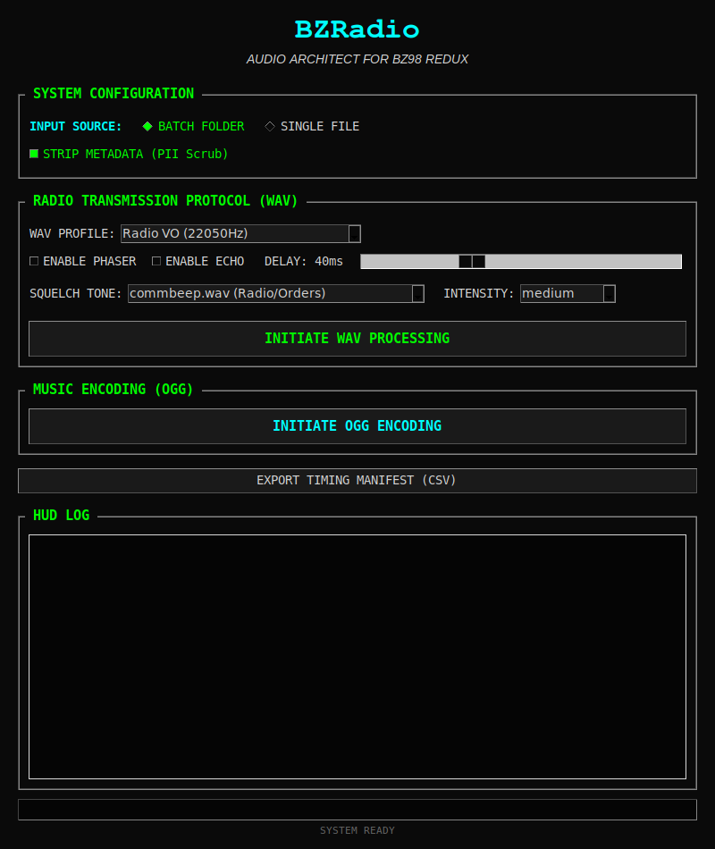
Audio masteringPrepares Battlezone radio VO, responses, thrust/turbo loops, and mission music with engine-correct WAV/OGG formats and optional radio processing.
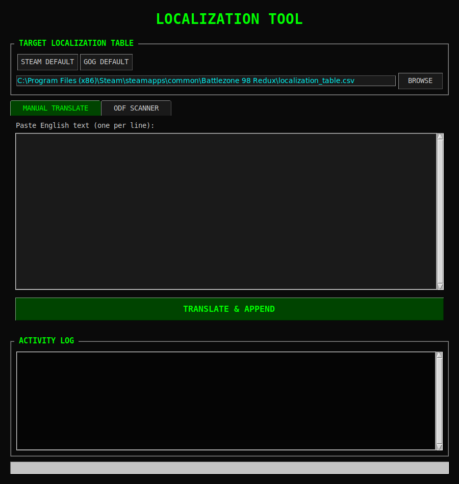
Localization workflowScans mod ODFs, generates localization keys, de-duplicates entries, and builds multilingual localization-table content.
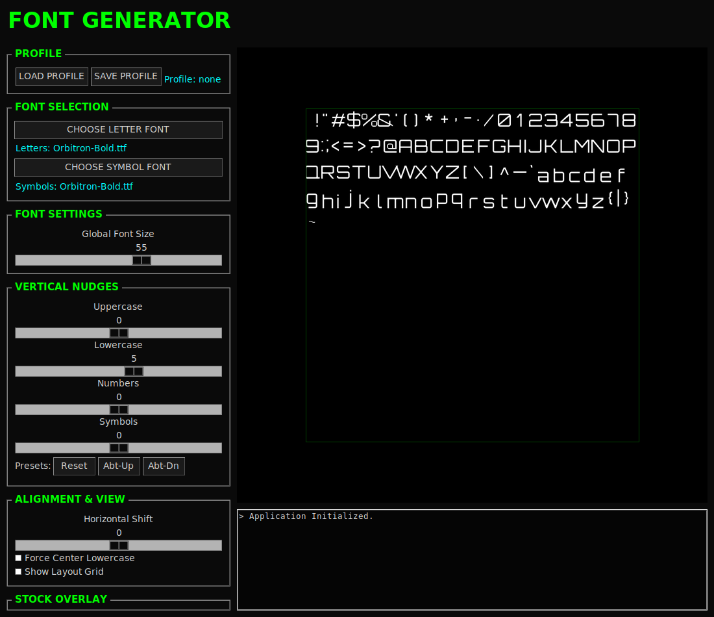
Font atlas generatorBuilds custom bzfont.dds atlases with stock-derived layout coordinates, dual-font support, presets, and comparison overlays.
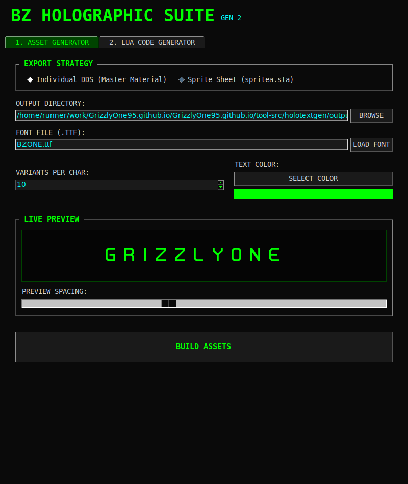
HUD content generatorGenerates ODFs, images, and materials for in-game holographic/HUD text built around the MakeExplosion technique.
Full Blender import/export suite for legacy GEO/VDF/SDF, Redux mesh/skeleton/material, ZFS, HG2 terrain, validation, cockpit, animation, and advanced authoring workflows.
Blender import/export add-ons for Battlezone II MSH and XSI asset workflows, grouped together as format-specific DCC tooling.
Windows GUI for recalculating normals and converting Ogre mesh/XML files to OBJ or glTF, including recursive batch workflows.
 UV atlas authoring
UV atlas authoringBlender add-on for optimized UV atlases with mirror detection, MaxRects packing, batch processing, flexible atlas sizing, presets, and material integration.
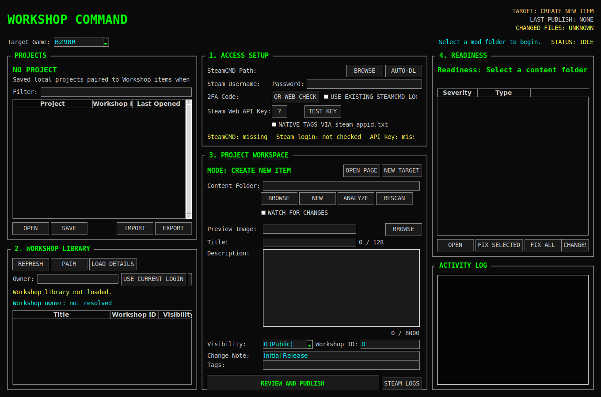
Steam Workshop publishingProject-centric SteamCMD uploader with readiness checks, pairing, changed-file tracking, one-click fixes, VDF generation, logs, and validation.
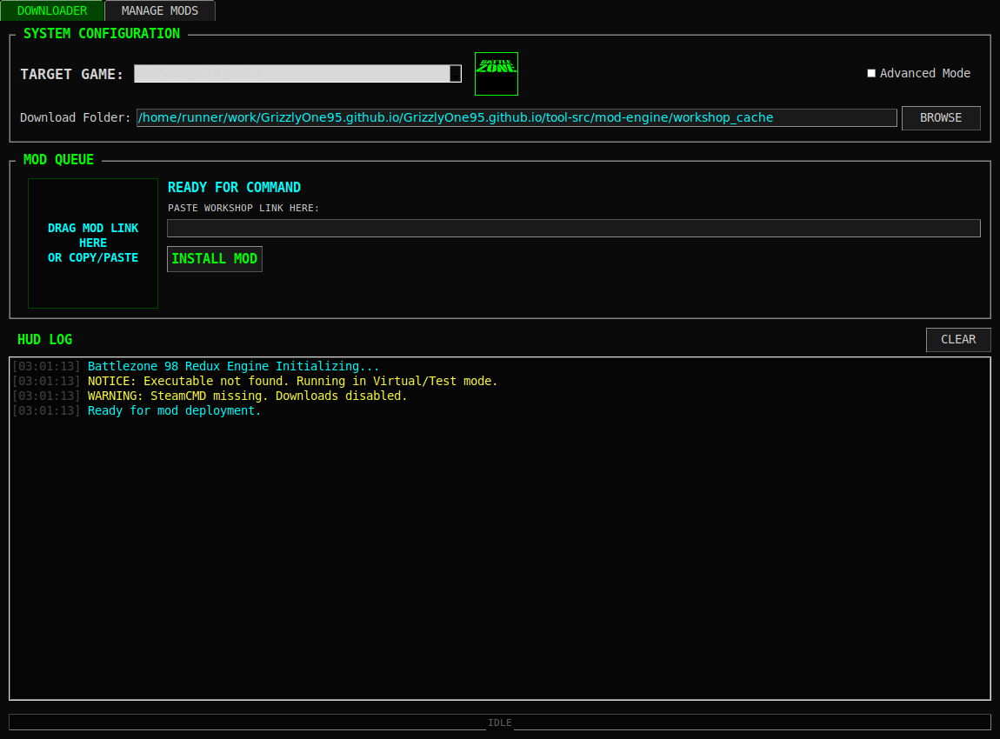
Mod managementDownloads and manages Steam Workshop mods for non-Steam Battlezone installations, with enable/disable workflows and update checks.
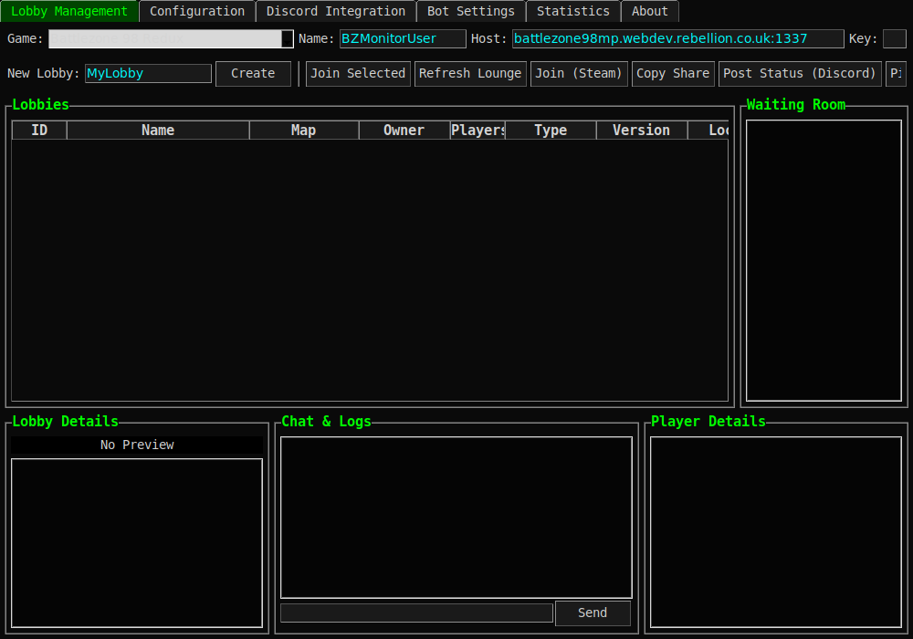
Lobby client & analyticsStandalone multiplayer lobby monitoring and interaction with chat, management, analytics, alerts, Discord integration, logging, and automation.
Live Battlezone 98 Redux lobby dashboard with current games, players, read-only waiting-room chat, activity history, map metadata, and Steam join links.
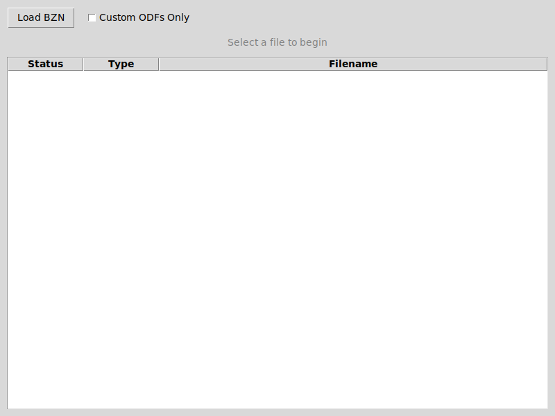
Mission diagnosticsScans ASCII or binary BZN files for referenced ODFs, sorts stock/custom references, and checks whether required assets are present.
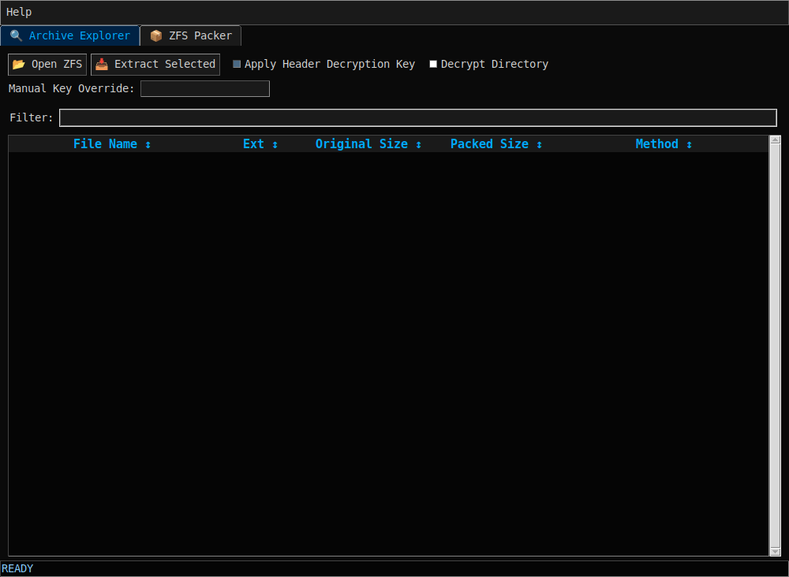
Archive explorer & packerBrowses, searches, extracts, force-extracts, and creates Battlezone ZFS archives with LZO compression and MakeZFS-compatible XOR encryption support.
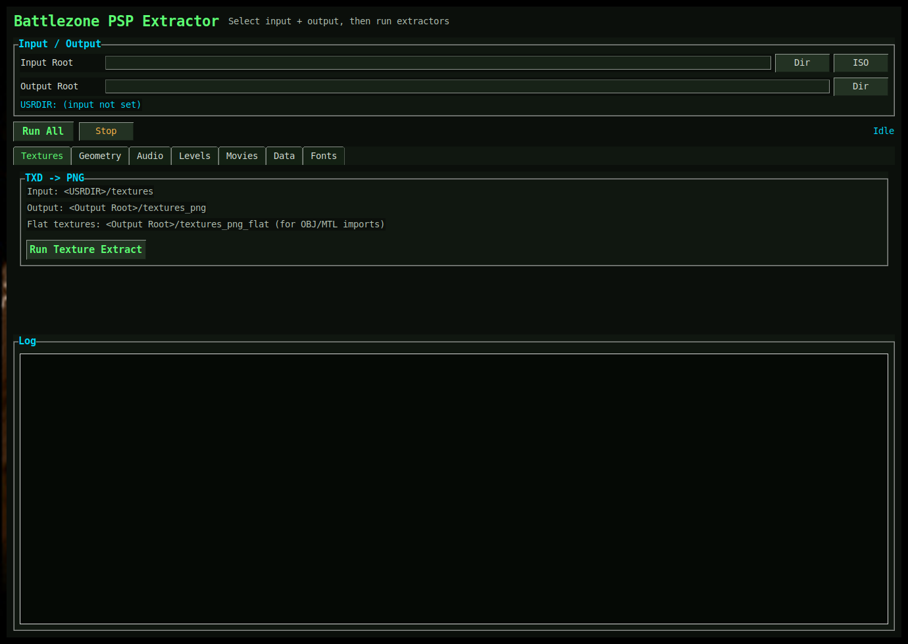
PSP asset extractionGUI for Battlezone PSP extraction from ISO or extracted data, covering textures, geometry, audio, level packages, movies, tables, and font metrics.
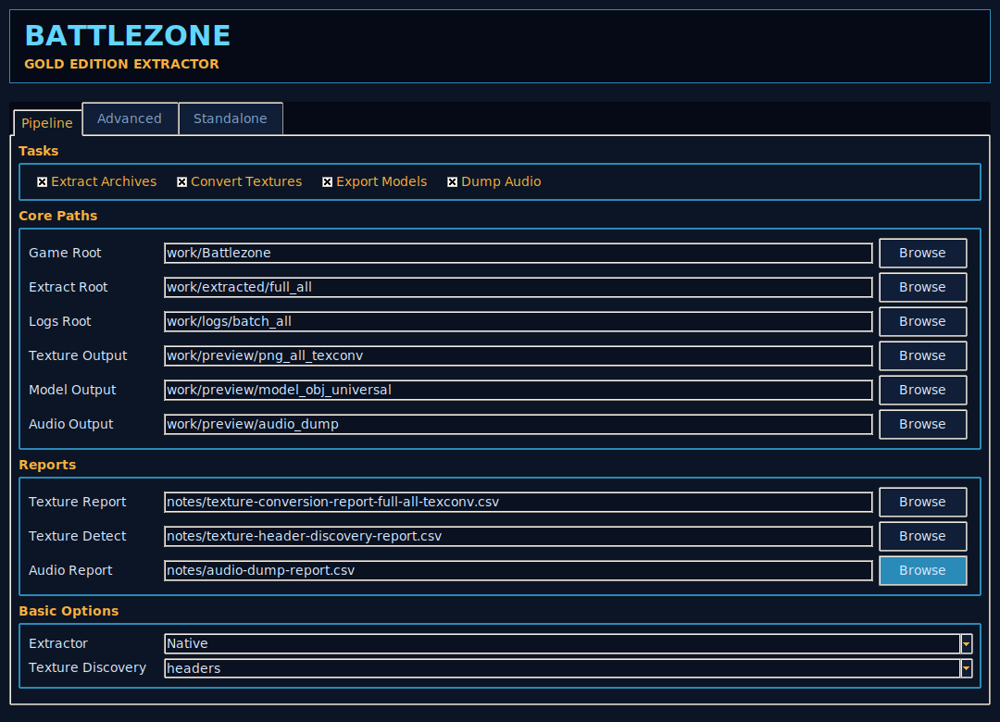
Gold Edition reverse engineeringExtracts and researches Battlezone Gold Edition's Asura-engine archives and proprietary textures, models, materials, and audio.
Tooling and research for the Nintendo 64 version of Battlezone. This belongs with the console/legacy utilities rather than the Redux-specific catalog.